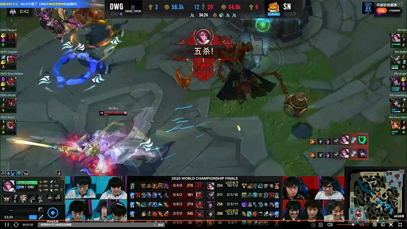
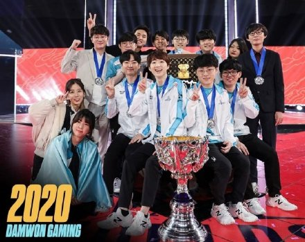

S10再次来到中国，主题曲为《Take Over》 由于疫情影响， 采用了线上观赛的方式。 这一次，沉寂了两年的LCK渴望夺回霸主的地位。 DWG不负夺冠大热门的期望， 成功杀入决赛。 而另一边LPL赛区的SN也是以黑马之势， 连斩LPL的一二号种子， 闯入决赛。 决赛中阿宾斩获了S赛决赛史上的首个五杀，但无奈抵挡不住DWG的攻势， DWG3:1战胜了SN。 正如 DWG中单ShowMaker所言，重铸Lck荣光，吾辈义不容辞！
 